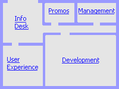

Argo/UML Virtual Offices
Click on the floor plan to go to an area of activity on the project.

| Welcome to the virtual offices of the Argo/UML open-source team. Feel free
to come in an look around. This is your chance to peek behind the scenes of an open-source development organization
and establish a place for yourself. Unlike a real office, this virtual office consists only of shared spaces where contributors work together to identify goals and tasks, volunteer for tasks, and summarize status. Much of the detailed work is done independently at a single contributors work site, or through mailing lists or direct email. This virtual office space helps to make tangible the aspects of the process would otherwise be lost in those many streams of discussion. |